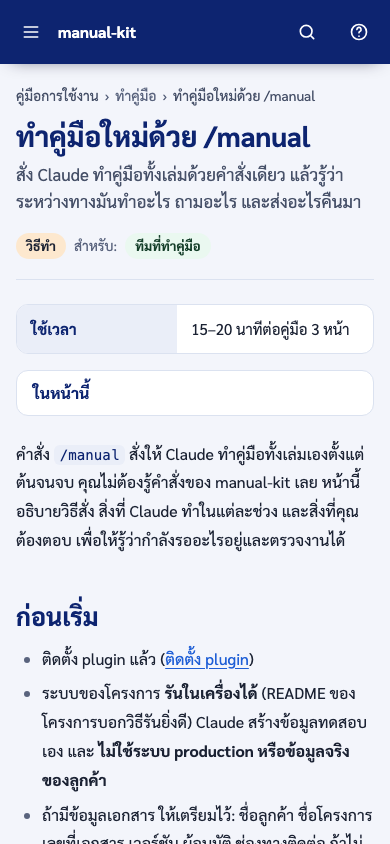
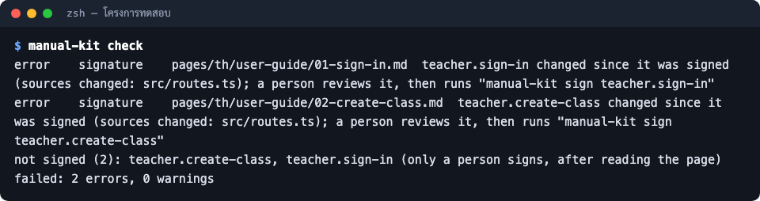

คู่มือการใช้งาน
เครื่องมือทำคู่มือการใช้งานระบบแบบทางการด้วย Claude Code
ฉันเป็น…
- ทีมที่ทำคู่มือ10 หน้า
- หัวหน้าทีม / PM6 หน้า
- ดูทุกงาน10 หน้า
ทุกหน้าของคู่มือ ไม่แยกตามบทบาท
งานที่ทำบ่อย ทีละขั้นพร้อมภาพ
 ติดตั้ง pluginติดตั้ง manual-kit เข้า Claude Code ด้วยสองคำสั่ง ครั้งเดียวต่อเครื่อง ราว 3 นาที
ติดตั้ง pluginติดตั้ง manual-kit เข้า Claude Code ด้วยสองคำสั่ง ครั้งเดียวต่อเครื่อง ราว 3 นาที ทำคู่มือใหม่ด้วย /manualสั่ง Claude ทำคู่มือทั้งเล่มด้วยคำสั่งเดียว แล้วรู้ว่าระหว่างทางมันทำอะไร ถามอะไร และส่งอะไรคืนมา
ทำคู่มือใหม่ด้วย /manualสั่ง Claude ทำคู่มือทั้งเล่มด้วยคำสั่งเดียว แล้วรู้ว่าระหว่างทางมันทำอะไร ถามอะไร และส่งอะไรคืนมา- อ่านและแก้สเปกคู่มือสเปกคู่มือคือสิ่งที่คู่มือทั้งเล่มเขียนตาม อ่านมันก่อนจะประหยัดการแก้ทีหลัง

ส่งมอบคู่มือให้ลูกค้าอ่านทวน กรอก (รอระบุ) รับรองหน้า ตรวจ PDF และเปิดไฟล์ Word จริงหนึ่งครั้ง ก่อนส่งลูกค้า
ดูแลคู่มือให้ตามระบบเมื่อระบบเปลี่ยน ให้ /manual update แก้เฉพาะหน้าที่กระทบ ใช้ /manual check ดูว่าอะไรเปลี่ยน และให้ CI ตรวจทุก merge request เผยแพร่ขึ้น Outline wikiส่งคู่มือขึ้น Outline wiki (เล่มละหนึ่งเอกสาร หน้าละหนึ่งเอกสารย่อย) ดูแผนก่อนด้วย --dry-run แล้วค่อยส่งจริง
เผยแพร่ขึ้น Outline wikiส่งคู่มือขึ้น Outline wiki (เล่มละหนึ่งเอกสาร หน้าละหนึ่งเอกสารย่อย) ดูแผนก่อนด้วย --dry-run แล้วค่อยส่งจริง
เริ่มต้น
ทำคู่มือ
ส่งมอบและดูแล
- ส่งมอบคู่มือให้ลูกค้าอ่านทวน กรอก (รอระบุ) รับรองหน้า ตรวจ PDF และเปิดไฟล์ Word จริงหนึ่งครั้ง ก่อนส่งลูกค้า
- ดูแลคู่มือให้ตามระบบเมื่อระบบเปลี่ยน ให้ /manual update แก้เฉพาะหน้าที่กระทบ ใช้ /manual check ดูว่าอะไรเปลี่ยน และให้ CI ตรวจทุก merge request
- เผยแพร่ขึ้น Outline wikiส่งคู่มือขึ้น Outline wiki (เล่มละหนึ่งเอกสาร หน้าละหนึ่งเอกสารย่อย) ดูแผนก่อนด้วย --dry-run แล้วค่อยส่งจริง
อ้างอิง
- ตัวเลือกของคู่มือเลือกภาษา จำนวนเล่ม ระดับภาพและวิดีโอ ข้อมูลเอกสาร และผลลัพธ์ บอกในคำสั่ง /manual หรือแก้ manual.config.yaml
- ปัญหาที่พบบ่อยอาการ สาเหตุ และวิธีแก้ ตั้งแต่ติดตั้ง ทำคู่มือ ตรวจ ออกไฟล์ จนถึงเผยแพร่
- ภาคผนวก: คำสั่งและกติกาคำสั่งทั้งหมดของ /manual และ manual-kit ในที่เดียว พร้อมกติกาที่ทุกโครงการต้องทำตาม
ดาวน์โหลด
บทนำ
วัตถุประสงค์
อธิบายว่า manual-kit คืออะไร ใช้ทำคู่มือการใช้งานระบบแบบทางการให้ลูกค้าอย่างไรตั้งแต่ติดตั้งจนส่งมอบและดูแลต่อ (คู่มือการใช้งาน) และอธิบายโครงสร้างภายในกับวิธีต่อยอดเครื่องมือสำหรับนักพัฒนา (คู่มือการพัฒนา)
ขอบเขต
ครอบคลุม plugin สำหรับ Claude Code (คำสั่ง /manual และ skill) คำสั่ง manual-kit ทุกคำสั่ง ผลลัพธ์ PDF, Word, เว็บคู่มือ และ Outline wiki งาน CI บน GitLab และการพัฒนา repo manual-kit ไม่ครอบคลุมวิธีใช้ระบบของลูกค้าแต่ละโครงการ
กลุ่มผู้ใช้
คู่มือการใช้งาน: เพื่อนร่วมทีมที่ต้องทำคู่มือส่งลูกค้า หัวหน้าทีม และผู้จัดการโครงการ (ไม่ต้องเขียนโค้ดเป็น) คู่มือการพัฒนา: นักพัฒนาที่ดูแลหรือเพิ่มความสามารถให้ manual-kit (เขียน TypeScript และใช้ Git เป็น)
| คำศัพท์ | ความหมาย |
|---|---|
| Claude Code | โปรแกรมผู้ช่วยเขียนโค้ดของ Anthropic ที่ทำงานใน terminal เราสั่งงานด้วยข้อความหรือคำสั่งที่ขึ้นต้นด้วย / |
| plugin | ชุดส่วนเสริมของ Claude Code ที่ติดตั้งเพิ่มได้ manual-kit มาเป็น plugin ที่มีคำสั่ง /manual, skill และเครื่องมือ manual-kit |
| marketplace | ที่เก็บรายการ plugin ให้ Claude Code ติดตั้ง repo manual-kit เป็น marketplace ชื่อ manual-kit |
| skill | เอกสารวิธีทำงานที่ Claude อ่านแล้วทำตาม manual-kit มีสองตัว: manual (ขั้นตอนตั้งแต่ต้นจนจบ) และ building-product-manuals (กติกาการเขียนคู่มือ) |
| สเปกคู่มือ | ไฟล์ manual-spec.md ที่สรุประบบ ผู้ใช้ ความสามารถ ขั้นตอนการทำงาน และแผนหน้าคู่มือ ทุกข้ออ้างไฟล์ต้นทาง |
| การรับรอง (sign) | การบันทึกว่าคนอ่านหน้านั้นแล้วและเห็นว่าตรงกับระบบ ทำโดยคนเท่านั้น |
| (รอระบุ) | เครื่องหมายแทนข้อมูลที่ยังไม่รู้ เช่น เลขที่เอกสารหรือผู้อนุมัติ ต้องกรอกก่อนส่งลูกค้า |
ภาคผนวก
ติดต่อ
(รอระบุ) ช่องทางติดต่อผู้ดูแล manual-kit